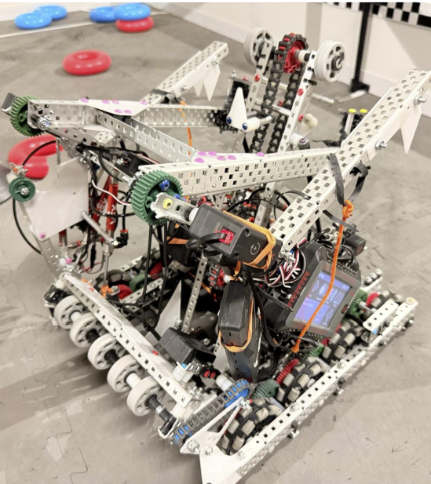
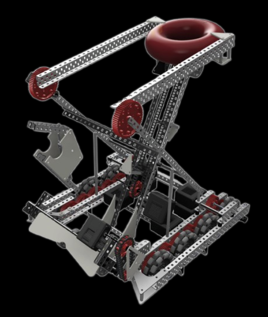

VEX Robotics Robot
World Championship QualifierAs team captain, I led the design and code for this competition robot, taking it from Fusion 360 CAD to a VEX Worlds qualification.
View Case Study
Challenge
VEX's 2024-25 "High Stakes" season: score rings on stakes (up to 3 points each) and climb a central ladder structure (up to 12 points) on a 12x12ft field, inside an 18x18x18in robot size limit.
Design
As team captain of Team 19359A, I led the mechanical design and directed the robot's programming, working with our team to brainstorm scoring mechanisms including an over-under flex-wheel intake, hook- and hood-style mobile-goal scoring, and a first-class-lever clamp to grab mobile goals from the field edge, targeting roughly 450 RPM through a 36-48 tooth drivetrain ratio for a ~10in wide base.
CAD
Modeled the full robot in Fusion 360 subsystem by subsystem: drive base, clamp, wall risers, a two-stage intake, a wall-stake scoring mechanism, and a climbing mechanism, each iterated through multiple CAD revisions (the clamp alone went through a V1 and V2) before being built.
Build
Manufactured and assembled each subsystem in sequence, including a ratchet mechanism for the climb, integrating them into a complete competition robot.
Controls
I led development of the control software: programmed in C++ on the PROS framework with the LemLib motion library, tuning PID control for autonomous movement and driver-assist macros.
Testing & Iteration
Built and refined multiple autonomous routes (a solo autonomous win-point route, positive- and negative-side routes, a goal-rush route, elimination routes, and a dedicated skills route), developed a custom route-visualization tool to plan paths, and logged technical difficulties and fixes after every competition.
Competition
Competed through a full season of qualifiers and skills events and qualified for the VEX Robotics World Championship.

 Fusion 360
Fusion 360 C++
C++ Arduino
Arduino Raspberry Pi
Raspberry Pi ESP32
ESP32 Python
Python OpenCV
OpenCV Git
Git